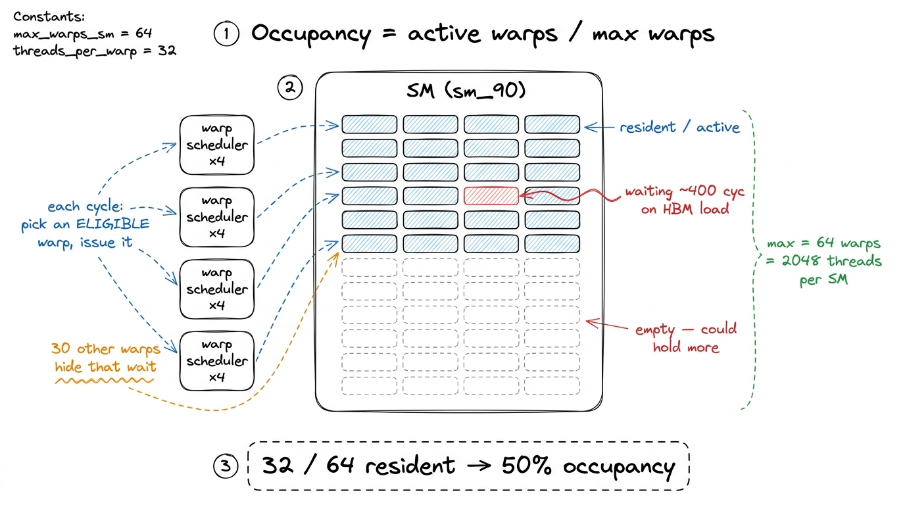
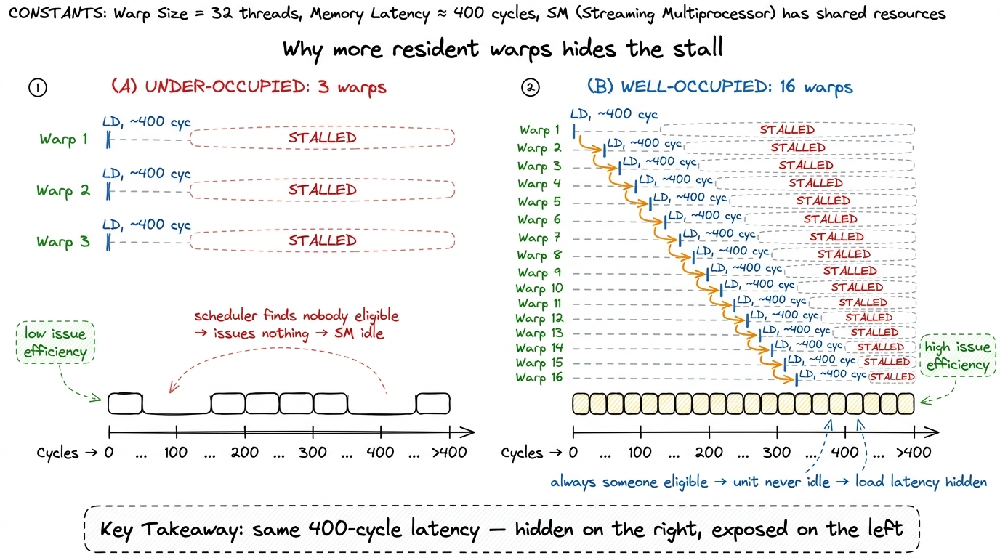
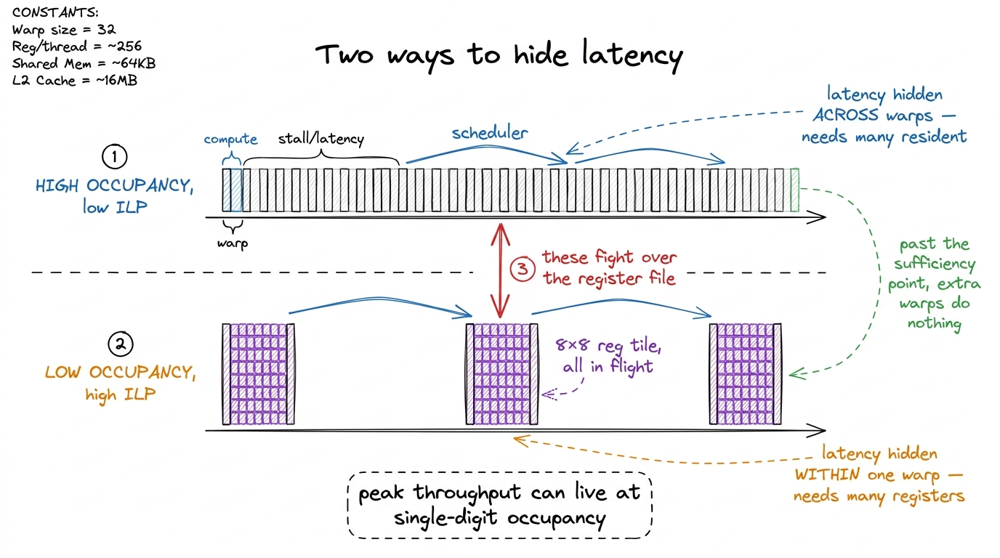
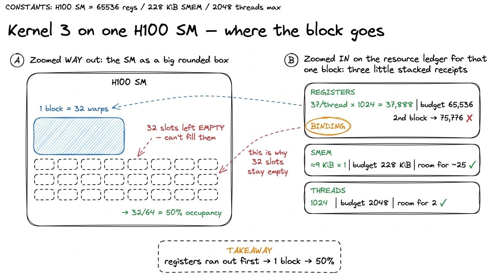
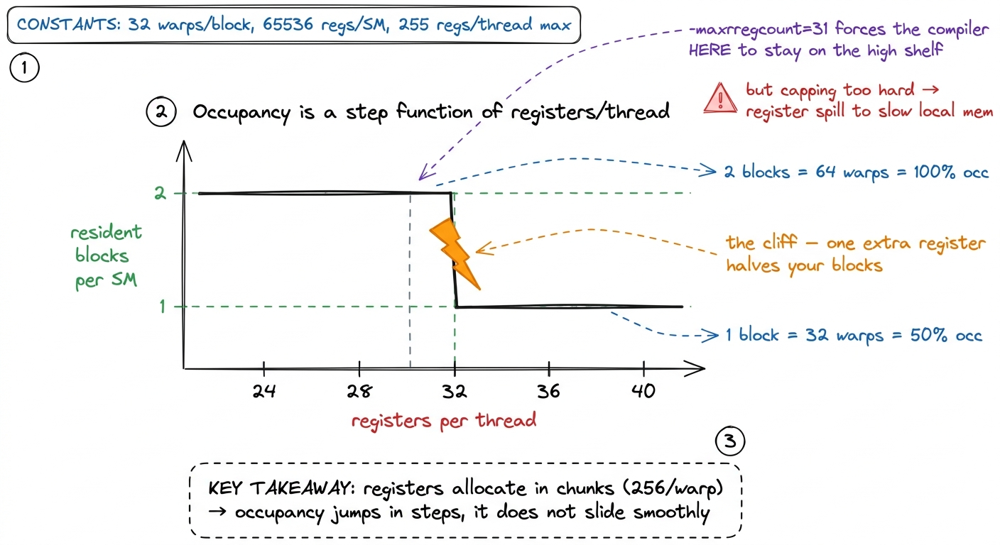
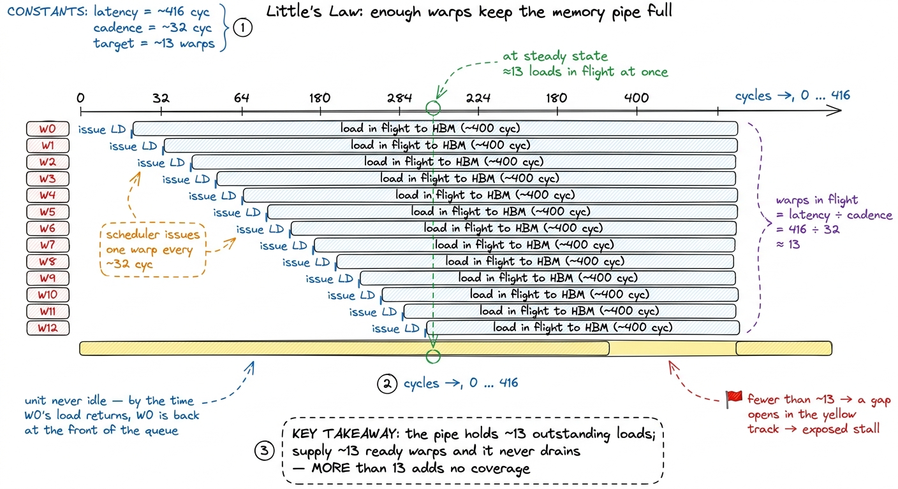
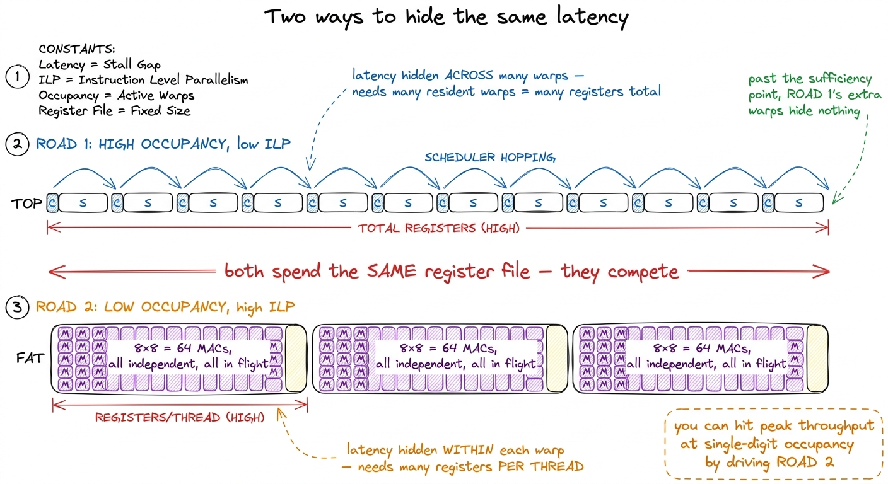
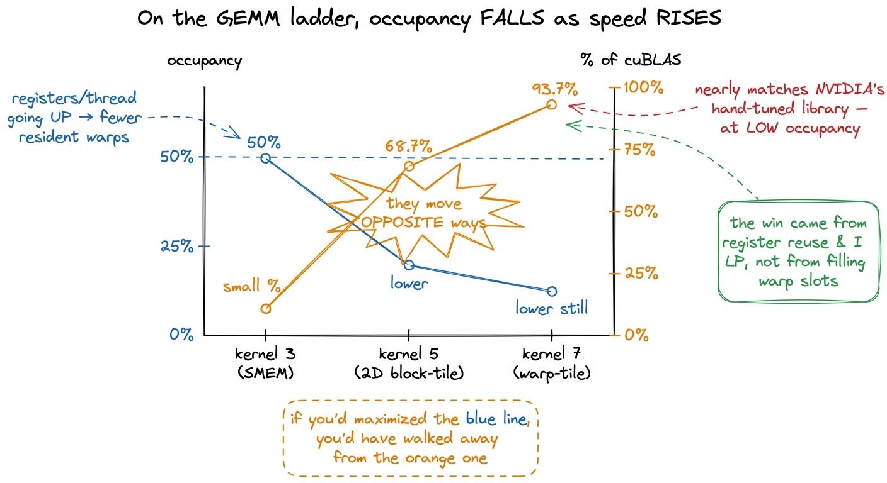

Occupancy: the balancing act
Here is a fact about GPUs that sounds like a complaint but is actually the whole design philosophy: a warp on a GPU spends most of its life doing nothing. It issues a load — "fetch me these bytes from memory" — and then it sits there, frozen, for hundreds of cycles while those bytes crawl in from HBM. If that were the end of the story, a GPU would be one of the slowest computers ever built. You paid for 989 TFLOP/s of tensor throughput on an H100 and it would spend 99% of its time staring at the wall waiting for memory.
The reason it does not work that way — the single trick that makes the whole machine fast — is that the GPU refuses to wait. The moment one warp stalls on a load, the hardware runs a different warp that has work ready to go. When that one stalls, it runs another. The memory latency is still there; it never went away. It is just being paid for by useful work happening on top of it. We call this latency hiding, and the number that decides how much of it you can pull off is called occupancy.
So here is the question this article answers, stated plainly: how full does an SM have to be with warps before it stops stalling — and is fuller always better? The answer to the first half is a piece of arithmetic you can do by hand in thirty seconds. The answer to the second half is a flat, surprising "no," and getting to why it's no is the thing that separates someone who has read about occupancy from someone who has actually profiled a slow kernel and been humbled by it. I have been the second person. This is the note I wish the first person had.
We'll build up from the smallest pieces — what a warp is, what "resident" means, why waiting is so cheap to hide — introduce one mental model early and lean on it the whole way, and only then reach the part where the fast kernels do the opposite of what your instinct says.
Warps, residency, and why waiting is cheap
Let's start from absolute zero so nobody gets left behind.
A warp is 32 threads that march in lockstep — same instruction, 32 different data lanes, every cycle. It is the atom of scheduling on a GPU. The hardware never schedules a single thread; it schedules a whole warp of 32 at a time. If you've read threads, warps, blocks, and grids, this is old news; if not, the one thing to hold onto is: the warp is the unit the scheduler thinks in.
Now, "resident." When you launch a kernel, the GPU chops your grid of thread-blocks and parks some of them on each Streaming Multiprocessor (SM) — the SM being the actual physical core, the thing with the execution units and the register file and the scheduler. A block that is parked on an SM, with its registers allocated and its shared memory reserved, is resident. Its warps are sitting in slots, ready to be run. A block that hasn't been placed yet is just waiting its turn in the grid.
Here is the crucial number. On an H100, one SM can hold up to 64 resident warps at once.1 The 64-warp ceiling — equivalently 2048 threads, since 64 × 32 = 2048 — is a fixed architectural property of the sm_90 SM. You do not configure it. It is not the same on every chip: the Ampere A6000 in Simon Boehm's classic CUDA-MMM worklog tops out at 48 warps (1536 threads) per SM, which is exactly why his occupancy percentages come out different from ours on identical code. That's 64 × 32 = 2048 threads it can juggle simultaneously. Occupancy is nothing more exotic than how many of those 64 warp slots you managed to fill:
$$\text{occupancy} = \frac{\text{resident warps}}{64}$$
Fill 64 of 64 and you're at 100%. Manage only 32 and you're at 50%. That's the whole definition. Everything else in this article is about (a) what stops you from filling all 64, and (b) whether you even want to.

figure rendering · Occupancy is just how many of the SM's 64 warp benches are staffed. ThNow the payoff question, asked the Socratic way: why does having more resident warps actually help? Let's not assert it — let's watch the hardware.
Each H100 SM has four warp schedulers. Every single cycle, each scheduler looks over all the warps resident in its partition and picks one that is eligible — meaning its next instruction has all its operands ready — and issues that instruction. That's it. That's the scheduler's entire job, once per cycle.
Now imagine a warp fires off a global memory load and the very next thing it wants to do is use the result. It can't. The bytes are ~400 cycles away. So that warp becomes ineligible — it's frozen for 400 cycles. If there are 30 other warps resident, the scheduler shrugs and issues from one of them instead, and the next, and the next; by the time all 400 cycles have elapsed, the load has quietly finished and nobody ever felt the stall. The latency was hidden under 400 cycles of other warps' useful work.
But if there are only two other warps resident, and they stall too, the scheduler runs out of eligible warps. It sits there. Cycle after cycle it looks around, finds nobody ready, and issues nothing. The execution units go dark. In Nsight Compute this shows up as low issue efficiency — a big fraction of cycles where no warp was ready to go — and it is the fingerprint of a kernel that is under-occupied.
So more resident warps = more chances the scheduler finds someone ready = more latency hidden. That is the entire mechanism. Hold this picture — the workshop with 64 benches and a foreman hunting for anyone ready to swing — because we reuse it for the rest of the article.

figure rendering · The identical memory stall is a disaster with 3 warps and a non-eventThe three things that stop you filling all 64 slots
If more warps are better, why not always run at 64/64? Because those warp slots aren't free floating. To make a warp resident, the SM has to hand its block three physical resources, and each of those resources is finite. Whichever one runs out first sets your ceiling.
The three resources are:
- Registers. Every thread needs its own private registers to hold live variables. The SM has one register file of exactly 65,536 32-bit registers (that's 256 KB) shared across everything running on it. If each thread wants 40 registers and a block has 1024 threads, that block alone claims 40 × 1024 = 40,960 registers. Total registers demanded = registers-per-thread × threads-per-block × blocks-per-SM, and that total may not exceed 65,536. (No single thread may exceed 255 registers, either.) See the register file for the gory details.
- Shared memory. On-chip scratchpad, the SMEM and L1 sharing one ~256 KiB pool per SM, of which up to 228 KiB can be carved out as shared memory.2 That 228 KiB is opt-in per kernel via
cudaFuncSetAttribute. The default carve-out is far smaller (~48 KB); you have to explicitly request the big configuration. And the runtime skims a small per-block reservation off the top, so your usable SMEM is always a little under what you ask for — which is exactly why the by-hand math below adds a+ 1024 Bfudge. Each resident block reserves its full SMEM footprint for its entire lifetime, so SMEM-per-block × blocks-per-SM cannot exceed the pool. - Threads and blocks. A block caps at 1024 threads, and the SM caps at 2048 threads (= 64 warps) and at most 32 resident blocks total. So even with infinite registers and SMEM, a block of 1024 threads is 32 warps and only two of them fit before you hit the 2048-thread wall.
And now the single most important sentence in this whole article: your occupancy is set by the tightest of these three limits. It's a min(), not a sum and not an average. The register budget might say "one block," the SMEM budget "twenty-five blocks," the thread budget "two blocks" — and you get one, because the stingiest resource wins. The hardware runs exactly this min() every time it decides whether another block will fit on an SM.

figure rendering · Three thermometers, one verdict. Whichever resource is scarcest for yoNotice how this reframes the whole tuning problem. You don't "increase occupancy" directly. You change your block dimensions, your register footprint, your SMEM usage — and occupancy is the output of the min() over those choices. It's downstream. That's why it can move in surprising jumps, as we're about to see.
Doing the arithmetic on a real kernel, by hand
Abstract limits are forgettable. Let's grind through the actual numbers on a real kernel from our GEMM ladder — kernel 3, the shared-memory cache-blocking version. It's a good specimen because it's simple enough to reason about but real enough that the answer surprised people.
Its launch config: 32 × 32 = 1024 threads per block. After compiling, nvcc reports it uses 37 registers per thread and 8 KiB of SMEM per block. Where does 8 KiB come from? The kernel stages two 32×32 FP32 tiles in shared memory — one from A, one from B — and 2 × 32 × 32 × 4 bytes = 8192 B. (Add ~1 KiB of runtime reservation and call it 9216 B, matching Boehm's own accounting.)
Now we run the three limits against an H100 SM, exactly the way the hardware does:
# H100 SM budgets (sm_90)
MAX_REGS = 65536 # 32-bit registers per SM
MAX_SMEM = 228 * 1024 # usable shared-memory carve-out
MAX_THREADS = 2048 # = 64 warps
MAX_WARPS = 64
# what kernel 3 asks for
regs_per_thread = 37
smem_per_block = 8192 + 1024 # tiles + runtime reservation
threads_per_blk = 1024 # = 32 warps
# how many blocks each resource permits
by_regs = MAX_REGS // (regs_per_thread * threads_per_blk) # -> 1
by_smem = MAX_SMEM // smem_per_block # -> 25
by_threads = MAX_THREADS // threads_per_blk # -> 2
blocks_per_sm = min(by_regs, by_smem, by_threads) # -> 1
warps = blocks_per_sm * (threads_per_blk // 32) # -> 32
occupancy = warps / MAX_WARPS # -> 0.50Walk it slowly. Registers: 37 × 1024 = 37,888 for one block. A second block would need another 37,888, total 75,776 — well past 65,536. So registers permit exactly one block. SMEM: 228 KiB ÷ ~9 KiB is about 25, so shared memory would happily host two dozen blocks. Threads: 1024 per block against a 2048 ceiling permits two blocks. Three answers: 1, 25, 2. The min() is 1. One block of 1024 threads is 32 warps, and 32 / 64 = 50% occupancy.3 On Boehm's 48-warp A6000 the identical kernel — same 37 registers, same SMEM — lands at 32/48 ≈ 66%. Same numerator, different denominator. It's a sharp reminder that "66% occupancy" describes a kernel on a specific chip, not a portable property of the code. Quote occupancy without naming the GPU and you've said almost nothing.
The register file was the binding constraint. Not shared memory, which had room to spare; not threads. Registers. That's a genuinely useful thing to have discovered in thirty seconds of arithmetic — because it tells you that if you want more occupancy here, shaving SMEM would accomplish nothing; you'd have to shave registers.

figure rendering · Zooming from the whole SM down to one block's resource receipts: regisThere's a cliff lurking in this arithmetic that's worth staring at, because it explains a lot of weird tuning behavior. Suppose a later optimization trimmed register use from 37 down to 33: 33 × 1024 = 33,792, still one block, occupancy unchanged — a nothing-burger. But registers are allocated in granular chunks (256 registers per warp on this hardware), and there exist magic thresholds where dropping one register flips you from one resident block to two — doubling occupancy in a single step. Cross back over the threshold and you fall off the cliff the other way. This step-function behavior is exactly why tuned kernels sprinkle in __launch_bounds__ or -maxrregcount: they force the compiler to spill a register or two if that's what it takes to stay under a threshold and keep two blocks resident.

figure rendering · Occupancy doesn't glide as you tune registers — it jumps. Cross one th4 Forcing the register count down isn't free either. If the compiler can't fit your live variables in the capped number of registers, it spills the overflow to local memory (which lives in slow global memory). You can win two resident blocks and lose it all to spill traffic. Always measure the kernel, not the occupancy number, after touching -maxrregcount.
The surprise: past "enough," more warps buy you nothing
Now the part that got me. Having convinced myself that occupancy hides latency, my instinct was obvious: maximize it. Shrink registers, shrink SMEM, cram in warps, chase 100%. Higher number, faster kernel. Right?
Wrong. And Boehm says the quiet part out loud in his worklog: a 66% occupancy on kernel 3 "is not too bad, so this doesn't explain why our kernel runs so slow." Occupancy was already fine. The slowness was somewhere else entirely. So the lever I was about to yank on wasn't even connected to the problem.
Here's why, reasoned from the mechanism. Latency hiding has a sufficiency point, not a linear payoff. Think back to the workshop: the foreman only needs enough ready benches to always have someone to tap during any given stall. How many is enough? A back-of-envelope estimate comes from Little's Law — the amount of work you need in flight equals latency divided by throughput:
$$\text{warps needed} \approx \frac{\text{latency}}{\text{issue cadence}} = \frac{416 \text{ cyc}}{32 \text{ cyc/warp}} \approx 13 \text{ warps}$$
Roughly a dozen warps per scheduler and the longest stall is fully covered.

figure rendering · Little's Law drawn as overlapping in-flight loads: stagger about thirt5 This is deliberately napkin-grade. The real number depends on how many independent memory operations each warp has outstanding at once — a warp with four loads in flight hides four times the latency per warp resident. That "independent operations per warp" quantity is exactly ILP, which is about to become the hero of the story. So the "13 warps" figure is really "13 warps if each carries only one outstanding load," and good kernels make sure that's not the case. Once you're past that point — once every stall the kernel actually incurs is already covered — adding a 14th warp, or a 40th, does nothing. The scheduler was already never idle. There was no naked latency left to hide. You've saturated the constraint, and further occupancy is just latency-hiding capacity sitting around with no one to hide.
And — this is the sting — that occupancy you bought wasn't free. You bought it out of the register file. Which matters enormously, because registers are also what makes a GEMM kernel fast in the first place.
Here's the tension. A fast GEMM kernel gets its speed by having each thread accumulate a big tile of output — say 8 × 8 = 64 results — entirely in its registers. Once a value from A or B is loaded into a register, it gets reused across dozens of multiply-accumulates before anyone touches memory again. That reuse is the whole game: it's how you convert a memory-bound kernel into a compute-bound one (the arithmetic intensity climbs). And critically, all 64 of those multiply-accumulates are independent — a thread can have many of them in flight at once. That's instruction-level parallelism (ILP): latency hidden within a single warp by having lots of independent instructions queued, rather than across warps by having lots of warps resident.
Do you see the collision? A big 8×8 register tile means high registers-per-thread, which means fewer blocks fit, which means lower occupancy. The two ways of hiding latency — many warps (occupancy) versus many independent instructions per warp (ILP) — both draw down the same register file. They are two roads to the same destination, and they fight over the fuel.

figure rendering · Occupancy across warps and ILP within a warp are two roads to the sameThis isn't a footnote — it's how the fast kernels work
You might think single-digit occupancy is some pathological edge case. It is not. It's how the best real kernels shipping right now actually run.
The GEMM kernels inside cuBLAS, and the attention kernels in FlashAttention, routinely run at single-digit occupancy on purpose. They hand each thread an enormous register tile, feed the tensor cores with a handful of warps carrying deep, independent instruction streams, and leave most of the SM's 64 warp slots deliberately empty — because they don't need them. Their bottleneck was never latency hiding. It was raw arithmetic throughput, and they solved that with ILP and data reuse, not with a mob of resident warps. Modal's own GPU glossary puts it flatly: on Hopper and Blackwell, high-performance kernels "frequently operate at single-digit occupancy percentages because they don't require many warps to fully utilize Tensor Cores."
Our own ladder tells the same story, and it's worth watching the two numbers move in opposite directions:
- Kernel 3, the shared-memory version: 50% occupancy, and slow — a small fraction of
cuBLAS. - The 2D block-tiling kernel: each thread now caches an 8×8 register tile. Occupancy drops (registers per thread shot up), yet it reaches 68.7% of cuBLAS — a huge jump in speed.
- The warp-tiling kernel: occupancy lower still, arithmetic intensity higher still, and it lands at 93.7% of cuBLAS — nearly matching NVIDIA's hand-tuned library.
Read that again. As these kernels got dramatically faster, their occupancy went down. Every rung of the ladder spent registers on reuse instead of on resident warps, and every rung was rewarded for it. If you'd been optimizing the occupancy number, you'd have marched in the wrong direction the entire climb.

figure rendering · Across three rungs of the real ladder the two curves cross: occupancyThe habit to walk away with
So what do you actually do with all this? The mistake is to treat occupancy as a score to maximize. The correct treatment is to treat it as a diagnostic — one reading on the dashboard, meaningful only in context.
The workflow is the same predict-then-measure loop from the three regimes: find out what your kernel is genuinely waiting on before you touch anything.
- If Nsight Compute shows low issue efficiency and long memory stalls with nothing to cover them — the scheduler keeps finding no eligible warp — then you are genuinely under-occupied, you're below the sufficiency point, and raising occupancy is exactly the fix. Shrink registers or SMEM, get more blocks resident, refill those benches.
- If issue efficiency is already high, or you're compute-bound and the math units are saturated, then occupancy is a solved problem. Spending registers to push it higher will only steal from your register tiles and make you slower. Leave it alone.
And do the cheap thing every time: compute the three limits by hand for any kernel you write. It takes thirty seconds — regs × threads, smem × blocks, threads × blocks, take the min() — and it tells you which specific resource you're spending, which is the actual actionable fact. Then let the profiler, not your gut, decide whether the next move is more warps or bigger register tiles.
Next on the ladder we do exactly this on purpose: we start trading occupancy for register-level reuse, deliberately letting the occupancy number fall, and we watch the percentage of cuBLAS climb rung after rung as it does. Occupancy is a means. It was never the end.